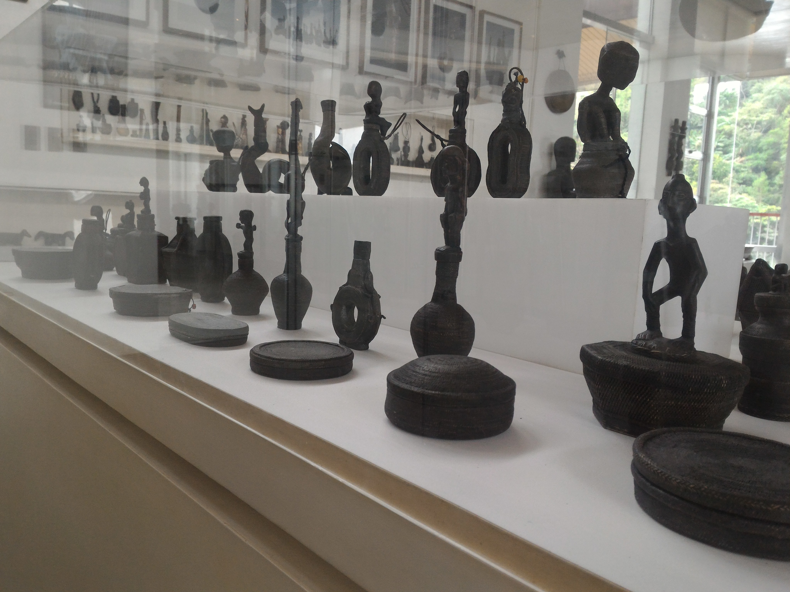

Cordilleran Culture
The Philippines has a lot of provinces that each have their own distinct culture. And today, we go on a trip to see the culture in Cordilleran region. I am Mary Jane Zheng, a Chinese. And I want to explore the culture of the country I am currently living in, Philippines. And luckily, some of my classmates are going to tour me around Bencab museum and teach me more about the Philippines, specifically Cordilleran culture.

In the museum, I saw a lot of things that I have seen in pictures and sometimes in restaurants but I don’t really understand what they are. I noticed that mostly the artifacts are carved and wooden. This made me really amazed at how creative Filipinos are. The first thing that caught my eye is the “Bulul”. They are statues that represent Gods or spirits that serve as guardians. It’s very creative because Cordilleran’s carve these themselves. I even saw table and chairs with similar statues. This emphasized how religious the Filipinos are even before they were colonized by Spaniards. They believed in their own Gods and worshipped them. They worship their Gods in everything they do. Which is amazing.


Another thing that caught my attention was the ceremonial boxes or containers where they store food. These are again carved containers. They caught my eye because they come in different kinds of shapes and sizes. And again, they are for ceremonial purposes like offerings or rituals. Wow, Filipinos are really religious! And creative at that.

There are many other artifacts that are displayed, each is a deeper understanding to the Cordilleran culture. Each showing another side of Filipino’s I did not know of. I saw woven jewelry boxes, gongs, weapons, cooking utensils, and more. Each signifying how artistic Filipinos are. They were able to use the simplest materials to make useful things. Truly inspiring.
I really loved the wooden houses they live in. It feels so traditional and creative. It is amazing how people still live in those houses. One look at these houses and one’ll know right away that it’s from the Philippines.
My trip to Bencab was a blast! I enjoyed every bit of it. I felt refreshed to learn new things about the Philippines. Of course there are other museums that show case Philippine culture. One day I would like to visit all of them.
At the end of the day, Philippine culture is not a one day trip. But within this one day, I can say I have come to understand a lot about the Philippines. And I believe the Filipinos should be proud of their culture. It is extraordinary. It is unique. It is who they are.